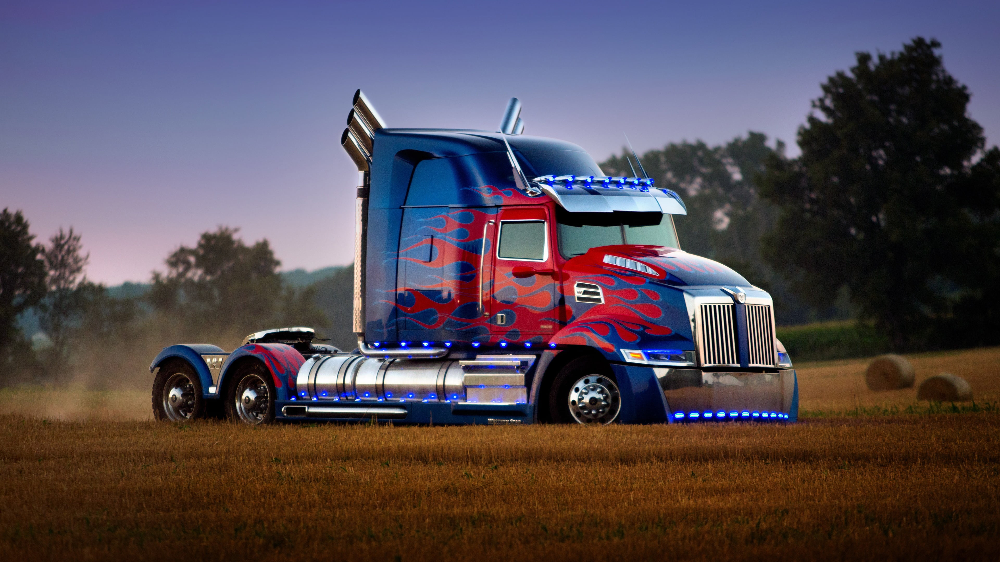

Don't Mess with Optimus Prime ⚔️
Optimus Prime is the leader of the main group of Autobots in the iteration of the Transformers franchise primarily marked by the 2010 computer-animated series Transformers: Prime on The Hub.[16] Optimus Prime was created as the last of the Thirteen Primes, the first generation of Transformers, each created directly by Primus as a band of unique warriors to combat and defeat Unicron.He can form bladed weapons or blasters from his hands. He has a telescopic vision and turns into a long-nose semi-trailer truck. Before the Great War, Optimus Prime was originally known as Orion Pax; a young data clerk who worked in Iacon, under the wing of Alpha Trion. Orion was chosen by the High Council and became "Optimus Prime", upon being entrusted with the Matrix of Leadership by Primus himself.
Being a Transformer, Optimus Prime can transform into a Kenworth K1000 cab over truck. With this, he can go at extremely fast speeds. He usually wields an ion blaster, a rifle that can shoots lethal explosive rounds and/or a barrage cannon, another rifle that shoots warheads filled with 3,000 pounds of TNT. He also has several melee weapons, such as energon axes, dual retracting swords, and hooks. He can also lift over 2,000 tons. In his chest is a mystic talisman, also known as the Autobot Matrix of Leadership and the Creation Matrix, carried by all Autobot leaders. When Optimus transforms, his cab turns into an ion blaster and his trailer disconnects, forming a combat deck. This deck supports a mobile battle station and headquarters armed with assorted artillery and beam weapons that fire automatically.
Optimus is a brave, and inspirational leader, able to rally others under his leadership. In his youth he was arrogant and reckless, which led to him misjudging the Underbase situation on Cybertron. Optimus would suffer self doubt many times. The strain of the war affected his mental state, even being willing to sacrifice a shipful of Autobots, including himself, to defeat Megatron once and for all. After the plan failed Optimus regretted having stranded the Decepticons on Earth, but channelled that regret into defending his new home. Optimus showed himself as a kind and charismatic figure, always open to offer the hand of friendship to humanity, refusing to use the Creation Matrix to create beings with only the capacity to kill. He could even persuade the likes of Scorponok to ally with him against a greater threat.